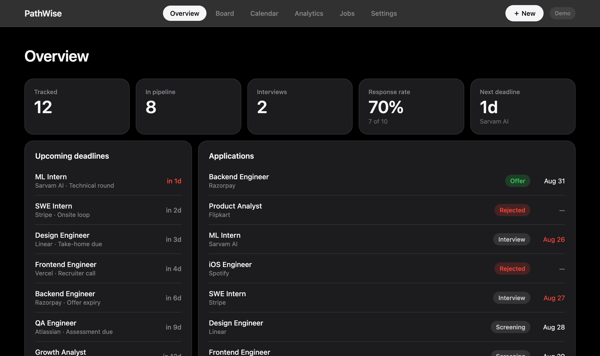
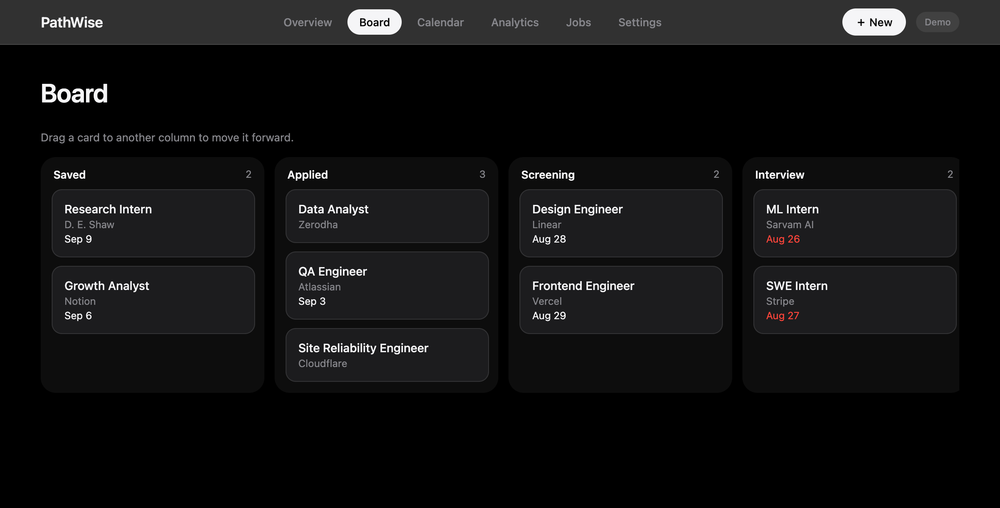

PathWise
Now live
Every application,
accounted for.
Track every job and internship in one place — six stages, deadlines that surface themselves, and a funnel from your own log.


pathwise.lol
Free · web, iOS & Android